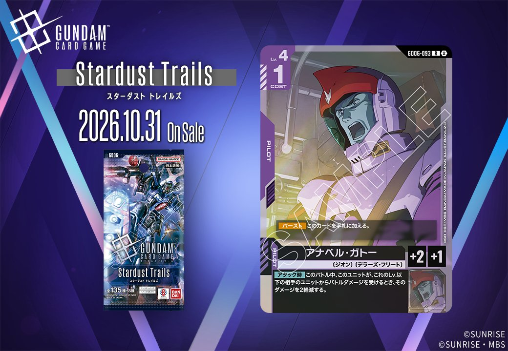
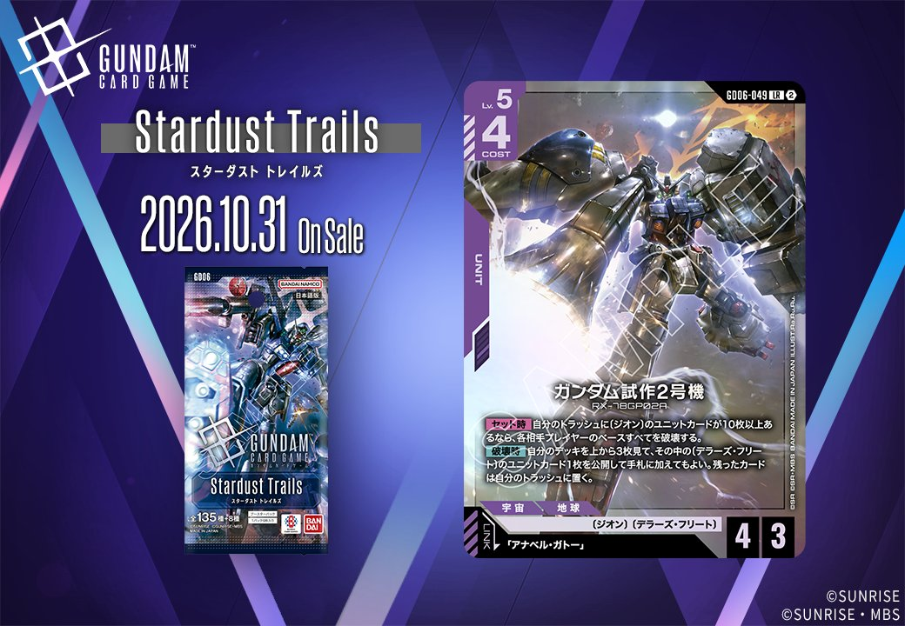

Phantom Aria(GD06)より、同日公開のUNITとPILOTがリンクで結ばれる組合せとして「ガンダム試作2号機」(GD06-049)と「アナベル・ガトー」(GD06-093)の紫2枚を紹介します。UNIT「ガンダム試作2号機」はリンク条件に「アナベル・ガトー」を指定しており、PILOT「アナベル・ガトー」と揃えることでリンクが成立する構成です。両カードとも2026-10-31発売で、組合せ前提でデザインされた点が確認できます。

アナベル・ガトー (GD06-093)
| 色 | 紫 | タイプ | PILOT |
| Lv | 4 | コスト | 1 |
| 補正 AP | 2 | 補正 HP | 1 |
| 特徴 | 〔ジオン〕、〔デラーズ・フリート〕 | ||
効果: 【バースト】このカードを手札に加える。【アタック時】このバトル中、このユニットが、これのLv.以下の相手のユニットからバトルダメージを受けるとき、そのダメージを2軽減する。
COST1でAP2/HP1と軽量ながら、【アタック時】に自身がLv.以下の相手ユニットから受けるバトルダメージを2軽減し、HP1の脆さを補いつつ相打ちを避けて攻め込める紫のパイロットです。同日公開の「ガンダム試作2号機」(GD06-049)にセットすればリンクが成立し、〔ジオン〕〔デラーズ・フリート〕を軸としたトラッシュ肥やしとの親和性が高い一枚です。 なお【バースト】で手札に戻せるため、シールドから捲れても無駄になりにくい点も評価できます。2026年10月31日発売のGD06収録カードです。



ガンダム試作2号機 (GD06-049)
| 色 | 紫 | タイプ | UNIT |
| Lv | 5 | コスト | 4 |
| AP | 4 | HP | 3 |
| 特徴 | 〔ジオン〕、〔デラーズ・フリート〕 | ||
| リンク条件 | 「アナベル・ガトー」 | ||
効果: 【セット時】自分のトラッシュに〔ジオン〕のユニットカードが10枚以上あるなら、各相手プレイヤーのベースすべてを破壊する。【破壊時】自分のデッキを上から3枚見て、その中の〔デラーズ・フリート〕のユニットカード1枚を公開して手札に加えてもよい。残ったカードは自分のトラッシュに置く。
ガンダム試作2号機(GD06-049)はCOST4でAP4/HP3、【セット時】にトラッシュに〔ジオン〕のユニットカードが10枚以上あれば各相手プレイヤーのベースすべてを破壊する強力な条件付き効果を持つ。この条件はトラッシュを肥やす中盤以降で狙いやすく、リンク先「アナベル・ガトー」を搭載すればセット時トリガーとして自然に組み込める点が噛み合う。 【破壊時】で自分のデッキ上3枚から〔デラーズ・フリート〕のユニットカード1枚を手札に加えられるため、破壊されても後続を確保でき、盤面の継続性を保ちやすい。2026-10-31発売で、ガトーのリンク中は【アタック時】ダメージ2軽減も乗るため、同一ユニット上での併用で攻めの安定感が増す。

関連カード
-
 ギャン(ST12-007)NEW紫系 — 同色・共通特徴: ジオン（新カード）
ギャン(ST12-007)NEW紫系 — 同色・共通特徴: ジオン（新カード） -
 ロニ・ガーベイ(ST11-012)NEW紫系 — 同色・共通特徴: ジオン（新カード）
ロニ・ガーベイ(ST11-012)NEW紫系 — 同色・共通特徴: ジオン（新カード） -
 シャンブロ(ST11-006)NEW紫系 — 同色・共通特徴: ジオン（新カード）
シャンブロ(ST11-006)NEW紫系 — 同色・共通特徴: ジオン（新カード） -
アナベル・ガトー(GD06-093)NEW紫系 — 同色・共通特徴: ジオン、デラーズ・フリート（新カード）